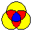

THE ELECTRONIC JOURNAL OF COMBINATORICS (ed. June 2005), DS#5.
Note: This is an updated version of a survey that first appeared as a Dynamic Survey in February, 1997, and was revised in 2001 and 2005. There is a summary of changes.
The purpose of these pages is to collect together various facts and figures about Venn diagrams, particularly as they relate to combinatorial and geometric properties of the diagrams. Aperiodic updates are planned and comments and suggestions are most welcome.

The icon to the left appears on all the following pages.
Clicking on it will bring you back to this page.
The 7-fold rosette at the top of the page is a Venn diagram for n = 7, called "Victoria." Find out more about it by going to the page on symmetric Venn diagrams for small n.
There are some Venn diagrams on the pages to follow that have not appeared before in the literature, in particular, most of the symmetric Venn diagrams for n=7.
All the Venn diagram figures to be found on the following pages, unless otherwise noted, are © the authors and are not to be used without written permission from the authors.
Received: August 28, 1996.
Previous editions: February 2 1997, March 15 2001.
Current edition: June 18, 2005.
|
| THE ELECTRONIC JOURNAL OF COMBINATORICS (ed. June 2005), DS #5. |